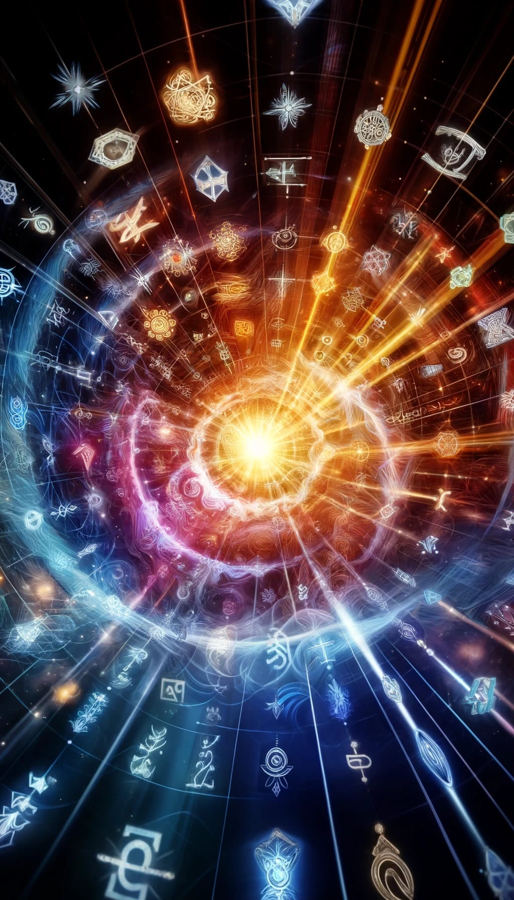
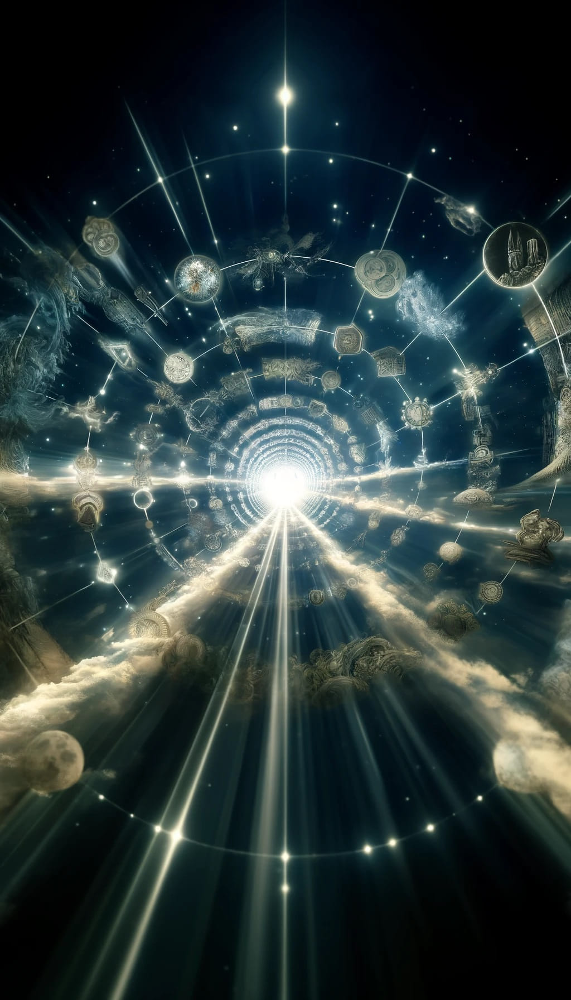

Symbolic Resonance: Unveiling the Interconnectedness of Ideas and Experiences
Introduction
Symbolic resonance occurs when symbols, patterns, or events evoke similar meanings, emotions, or responses across different contexts or periods. It shows how far a symbol can travel past the perspective that produced it. What follows sets out the concept, its role in The Collective Mind Object, and its significance in understanding the unified nature of consciousness and the universe.

Universe 00110000
Symbolic Resonance in Plain Terms
A flood story appears in Mesopotamian tablets, in Genesis, in Hindu scripture, and in accounts from the Americas and the Pacific. Some of that is contact between cultures. Some of it is that people everywhere live near water and remember disasters. And some of it is that a world washed clean and started again is a shape the mind reaches for.
Symbolic resonance is the name for that last part: the same figure carrying the same weight for people who never met. A circle for wholeness, a journey for a life, light for understanding, a threshold for change. Jung (1968) called the recurring figures archetypes, Campbell (1949) traced one of them through the world's hero stories, and Eliade (1949) followed the pattern of return through myth and ritual. These recur because human bodies and situations recur, and a symbol that fits a common situation gets rediscovered rather than transmitted. Lakoff and Johnson (1980) traced many of them to bodily experience, and Lévi-Strauss (1963) to recurring structural oppositions.
Two mechanisms operate and they are worth keeping apart. Diffusion says the symbol travelled. Convergence says it was found twice because the conditions were the same, which is the selection process Sperber (1996) described for cultural representations that are easy to remember and pass on. They are not rivals: a symbol still has to survive the filter to be worth carrying, so diffusion explains a symbol's route and convergence explains why that route stayed open. Resonance is the second of these, and it is what makes a travelling symbol land.
The practical value is in reading. A symbol that resonates is doing work with very little material, which is why a single image can carry what a paragraph could not, and why the same image keeps reappearing where the work needs doing.
The Emergence of Symbolic Resonance
At its core, symbolic resonance emerges when the significance or impact of a symbol extends beyond its immediate appearance or occurrence. It creates connections that bridge the gaps between disparate experiences, cultures, and eras. When a symbol resonates, it taps into a collective understanding that goes beyond personal interpretations, revealing a deeper layer of meaning that is shared across time and space.
Limited Computational Resources and Optimization
Within the simulation hypothesis framework, symbolic resonance can be seen as a mechanism for optimizing and compressing information in a simulated reality constrained by limited computational resources. As simulations must operate efficiently to handle complex scenarios without overwhelming the underlying infrastructure, symbolic resonance helps streamline processes, reduce redundancy, and focus on generating meaningful interactions and experiences.
Symbolic Resonance in the Collective Mind Object
In the context of the The Collective Mind Object, where the existence of a higher-dimensional space where all subjective experiences are interconnected, symbolic resonance plays a vital role in reducing informational redundancy and highlighting essential patterns and connections. By emphasizing the most significant and impactful elements, symbolic resonance contributes to the creation of a cohesive narrative that requires fewer resources.
Examples of Symbolic Resonance
Symbolic resonance can be explored through phenomena such as historic recurrence and déjà vu. Historic recurrence refers to the repetition of similar events or patterns throughout history, suggesting that human experience often reuses stable symbolic forms. Déjà vu can be interpreted as a moment when present experience strongly matches stored patterns, giving the feeling of contact with a shared symbolic field.

Universe 00110000
Compression and Transcendence
Moreover, symbolic resonance acts as a compression mechanism within the Collective Mind Object. By distilling complex ideas and experiences into optimized, resonant forms, it allows for more efficient storage and processing of information. This compression ensures that the essential essence of an experience is preserved, while the less significant details are filtered out.
One of the most fascinating aspects of symbolic resonance is its ability to transcend individual perspectives. When we encounter a symbol that resonates, we tap into a collective understanding that goes beyond our personal experiences. It is as if we are glimpsing into the higher-dimensional Collective Mind Object, where the interconnectedness of all experiences becomes apparent.
Conclusion
In conclusion, symbolic resonance is a profound phenomenon that offers a glimpse into the interconnectedness of ideas and experiences. By highlighting essential patterns and connections, it contributes to the creation of a cohesive narrative that transcends individual perspectives. Through the lens of the Collective Mind Object, symbolic resonance emerges as a powerful tool for understanding the unified nature of consciousness and the universe. As we continue to explore the depths of symbolic meaning, we may uncover new insights into the fundamental nature of reality and our place within it.
References
- Campbell, Joseph. The Hero with a Thousand Faces. Pantheon, 1949.
- Eliade, Mircea. The Myth of the Eternal Return. 1949. Translated by Willard R. Trask, Princeton University Press, 1954.
- Jung, C. G. The Archetypes and the Collective Unconscious. Translated by R. F. C. Hull, 2nd ed., Princeton University Press, 1968.
- Lakoff, George, and Mark Johnson. Metaphors We Live By. University of Chicago Press, 1980.
- Lévi-Strauss, Claude. Structural Anthropology. Translated by Claire Jacobson and Brooke Grundfest Schoepf, Basic Books, 1963.
- Sperber, Dan. Explaining Culture: A Naturalistic Approach. Blackwell, 1996.